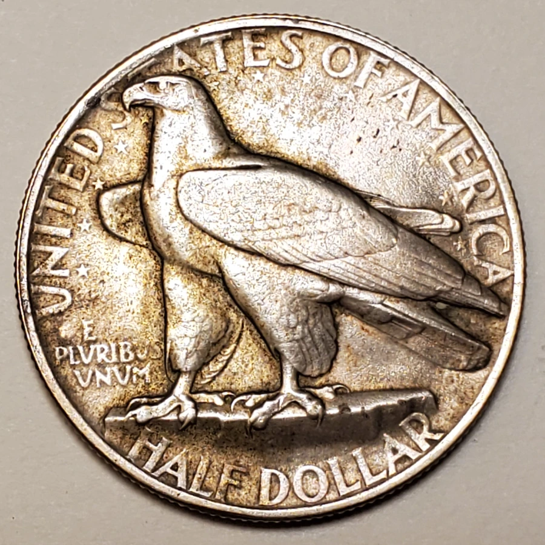
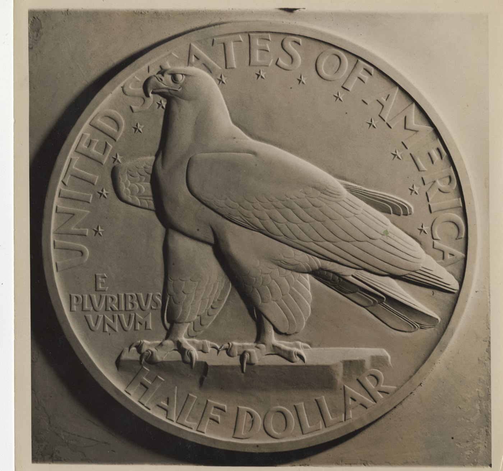
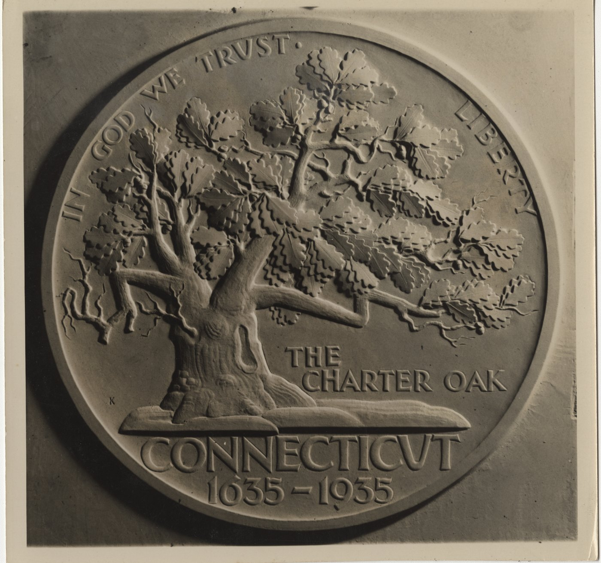
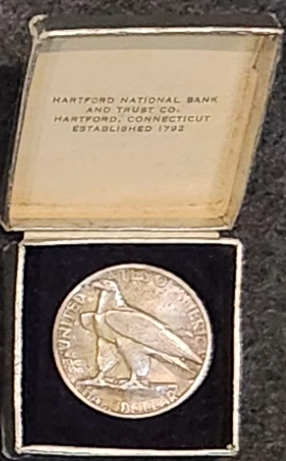

Commemorative half dollar · 1935
Connecticut
Tercentenary
Designed by Henry Kreis to commemorate the 300th anniversary of Connecticut's founding, the half dollar pairs a boldly modeled American eagle on the obverse with the Charter Oak on the reverse.
- Designer
- Henry Kreis
- Mint
- Philadelphia
- Mintage
- 25,018
- Original price
- $1
The issued coin
Two sides of one design


Issued-coin photographs from the Kreis family collection.
Design and meaning
The Charter Oak as a symbol
The coin commemorated three centuries since 1635, recognized as the founding year of Connecticut. Kreis placed the Charter Oak at the center of the design. According to tradition, Connecticut's royal charter was hidden in the tree in 1687 to prevent its seizure by Governor-General Edmund Andros.
Rather than treating the tree as a distant emblem, Kreis gave it weight and physical presence. Its trunk, spreading branches, and dense leaves occupy nearly the entire field. On the other side, the eagle is modeled with the same sculptural directness.
From model to coin
The plaster models
Enlarged plaster models allowed the relief, lettering, and balance of each side to be resolved before reduction to coin size.


Plaster photographs courtesy of the Gallery of Fine Arts, Yale University.
Issue and distribution
A rapid sellout
Congress authorized 25,000 coins. The Philadelphia Mint first struck 15,000, and strong demand led the Connecticut Tercentenary Commission to request the remaining authorization. The full issue sold quickly. The recorded mintage of 25,018 includes pieces reserved for annual assay purposes.
The coins were distributed at an original price of one dollar through the Tercentenary Commission and participating Connecticut banks.

Surviving presentation material
The original issue box
The fitted box connects the commemorative coin to its local distribution. Its interior identifies the Hartford National Bank and Trust Company, Hartford, Connecticut.
Photograph from the Kreis family collection.
Specifications
Coin details
- Year
- 1935
- Denomination
- Half dollar
- Composition
- 90% silver, 10% copper
- Weight
- 12.5 grams
- Diameter
- 30.6 mm
- Edge
- Reeded
- Mint
- Philadelphia, no mint mark
- Mintage
- 25,018
Research sources
Further reading
- United States Mint: Connecticut Tercentenary Half Dollar
- Connecticut Tercentenary half dollar: design and legislative history
- Kreis family photographs and collection documentation.